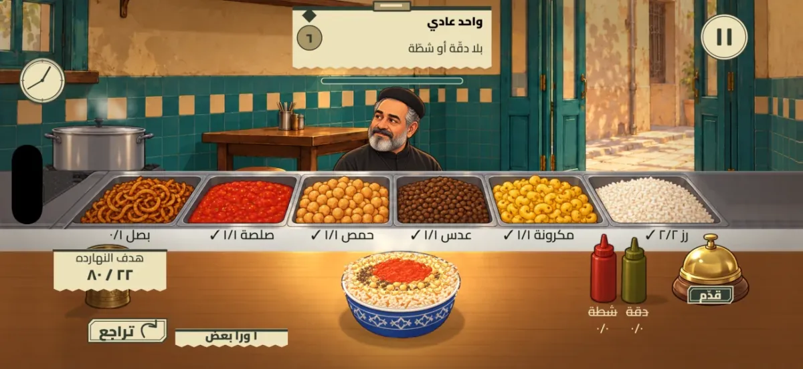
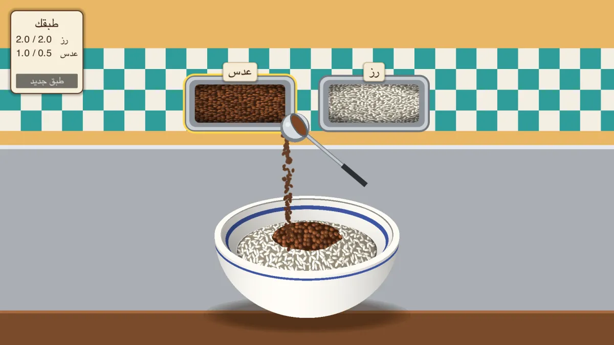
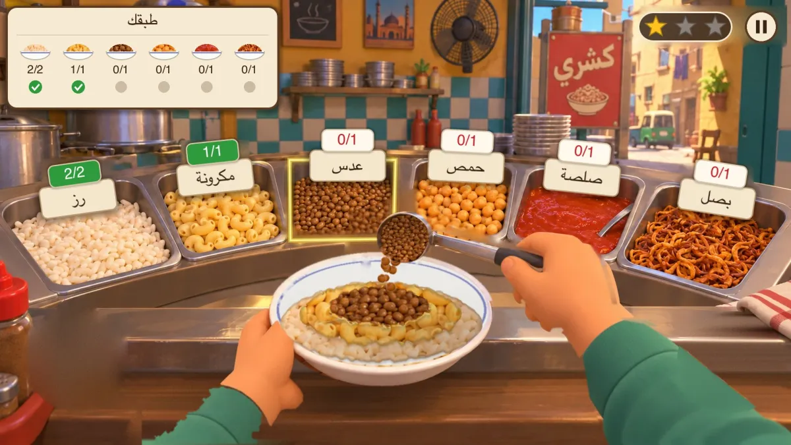
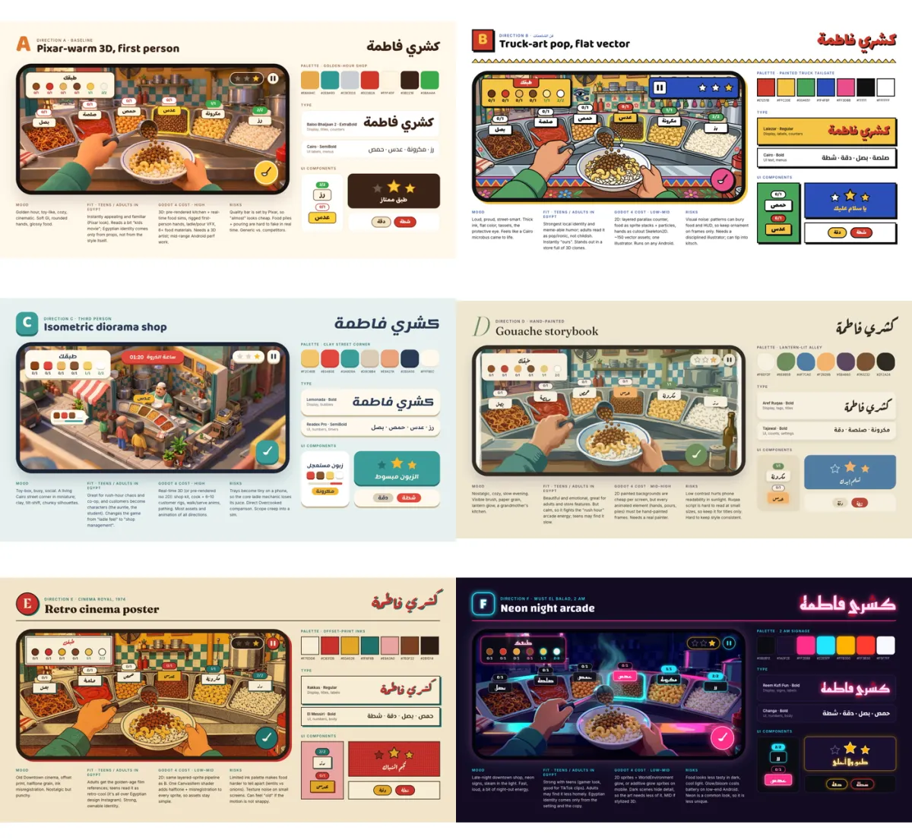
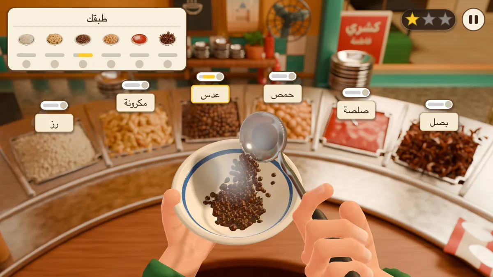
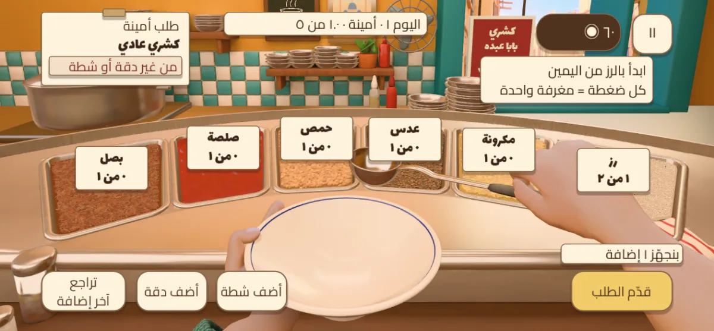
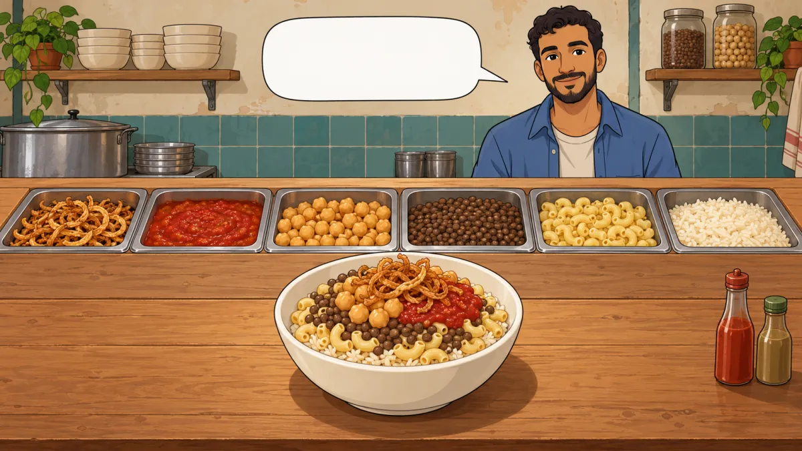
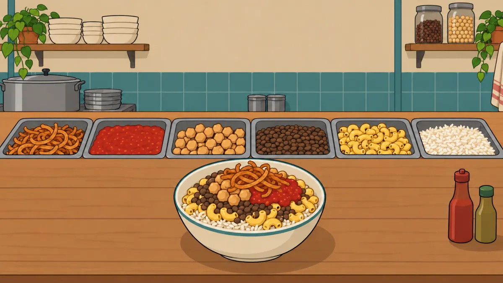
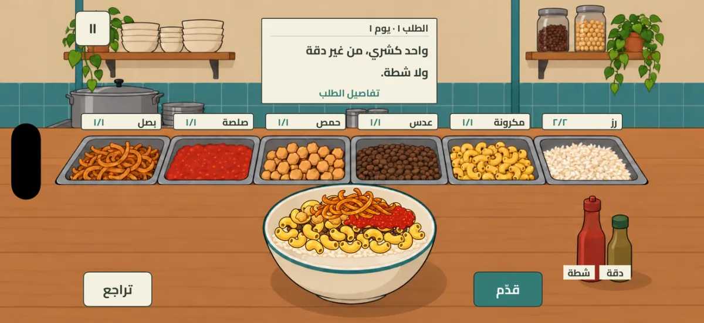

Launch · Baba Abdo for iPhone
Koshary cooking game for iPhone: Baba Abdo is out
Baba Abdo is a free koshary cooking game for iPhone, made in Arabic. It took six weeks, two engines, a 3D prototype I loved and a flat version I almost did not try.

Apple approved Baba Abdo today. You run a small koshary shop in a Cairo neighborhood. Each neighbor has a usual order, and you build each bowl in the right layers: rice, pasta, lentils, chickpeas, tomato sauce and fried onions. The story runs for seven days. The game is free, with no in-app purchases.
The game you can download is not the game I started. This post shows the versions in between, with real screenshots from each one.
Day one: a 2D spike
On 10 October I had one picture of the idea: a warm, first-person koshary shop with a ladle and a bowl. I called the game Koshary Fatma. My project folder was named after Abou Tarek, but that is a real and famous koshary shop in Cairo, so the game needed a name of its own.
I picked Godot so the game could also come to Android. The first spike was 2D: code-drawn trays, a shader bowl and a hold-to-pour ladle. The pouring worked. The look did not. My note at the time was that it looked very far from the original idea.

The same afternoon I tried sprites cut from the reference picture. A still frame looked almost the same as the picture, but the food in the bowl looked like flat stickers. So I went to 3D.

Six art directions
Before I put more time into 3D, I used image generation in Paper to try six looks: warm 3D, Cairo truck-art, an isometric diorama, a gouache storybook, a 1970s cinema poster and a neon night arcade. The review scored truck-art first, because it was cheap to make and very Egyptian. I picked the warm 3D one anyway, because it was closest to the picture in my head.

The 3D prototype
The 3D version mixed two tools. Blender rendered the kitchen behind the counter. Godot drew the bowl, the ladle, the hands and thousands of small food grains in real time. It looked like a real game in the first week.

The details took the time. The first food looked like beads, then the rice looked like beans. The first TestFlight build did nothing at all on my iPhone, because a full-screen layer caught every touch before the game could see it. Build 0.1.1 fixed that.
The arm that never felt right
Then I wanted a real arm that scoops and pours. We built three rounds of arm motion with inverse kinematics. The tests passed, but my eye did not: the elbow went up, the arm came down from the top of the screen, and nothing about it felt natural. A checker we wrote for joint limits and speed then failed both late rounds on 36 of 36 checks.
At that point I asked myself if we were doing something wrong at a bigger level. We were. We had too many parallel tasks and a large set of automatic checks, and I was out of the loop. The new rule was simple: my eye is the gate, and one change gets one review.
In parallel I tried a photoreal 2D version in SpriteKit, with AI-made food and small hands. It did not feel like a game either, so I parked it.
On 21 October I finally built the full game flow in 3D: orders, a timer, a day counter and the new name on the sign, Baba Abdo. It worked, but the camera moved too much, the text sat on top of a different set of labels, and the buttons felt like a website, not a game.

The feedback that changed the game
The next day a tester played the TestFlight build. The writing felt cringy to her, the hands felt weird, and the customers did not work. Her short list matched what I already felt. So I asked for the simplest version that is still new: a fixed bowl, no arms, flat food, like the fixed boards of good kitchen games.
The first concept had a drawn customer at the counter. I did not want that, because every customer would need new art. We changed the customer to a reusable order ticket, and I said yes to that version. Then I asked to build it in SpriteKit, because it fits a flat, iPhone-first game.


Making flat look good
The first SpriteKit build shipped to TestFlight on 23 October. It played better than any 3D build. It also looked plain: an empty counter, one background and text boxes for buttons.

The next four weeks made it a game:
- Food and sound: a food atlas with a sprite for each layer, steam over the pots, and recorded kitchen sounds.
- People: neighbors with their own orders and moods, from Hassan who skips the onions to Father Mina.
- Pressure: a customer rush, deadlines, and customers who leave angry when you are too slow.
- A shop to grow: spend the day's money on a tablecloth, a fan, chairs and a lamp.
- Style: an "ink and receipts" look for tickets, menus and the end-of-day receipt.
- Reach: a daily order with Game Center, accessibility fixes for large text, and English next to the Arabic.
The final game kept the flat counter from concept two. The 3D prototype is archived in the repository. I still like how it looks. I like playing the flat one more.
What I learned
- Match the picture first. Logic that works does not help if the first screen looks wrong.
- Tests do not judge motion. A green checker said the arm was fine. My eye said it was not.
- Watch the art cost. One drawn customer looks great. Twenty drawn customers is a different project.
- Let a tester say it. One honest play session did more than ten days of 3D polish.
Questions
Is Baba Abdo free? Yes. Baba Abdo is free on the App Store for iPhone, with no in-app purchases.
What language is Baba Abdo in? The game is Arabic first, with Egyptian dialect. Version 1.0 also has English menus and text.
What do you do in Baba Abdo? You run a koshary shop in a Cairo neighborhood. You read each customer's ticket, build the bowl in the right layers, and serve it before the customer gets angry. The story runs for seven days, then you can keep playing.
Why did you leave the 3D version? The 3D version looked close to the reference, but the arms never felt natural, and each new customer needed new art. A flat SpriteKit version was simpler to read, faster to change and more fun to play.
كشري بابا عبده
«كشري بابا عبده» لعبة طبخ مصرية مجانية للآيفون. افتح المحل، واقرأ طلب كل زبون، وحضّر طبق الكشري بالترتيب الصح قبل ما الزبون يزهق. شوف صفحة اللعبة.